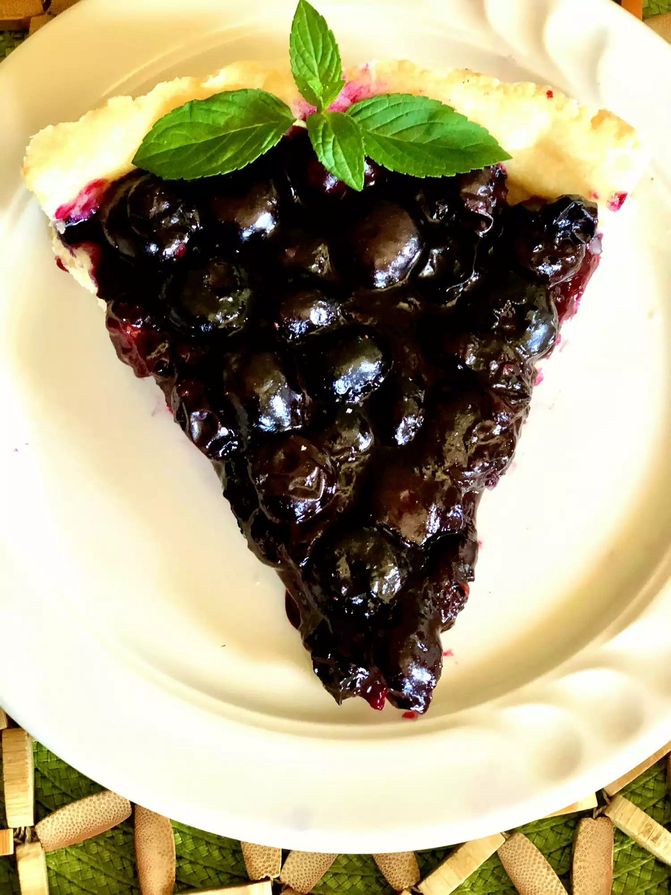

A flaky shortbread crust with blueberry topping. Dust with powdered sugar.
Preheat the oven to 350 degrees F (175 degrees C).
Mix flour, butter, and powdered sugar together until a dough forms. Press dough into a 9-inch tart pan with a removable bottom.
Bake in the preheated oven until golden brown, about 20 minutes. Let cool slightly.
Meanwhile, toss blueberries with cornstarch and place in a saucepan over low heat. Add sugar and lemon extract. Simmer, stirring gently to avoid crushing the berries, until sugar dissolves and filling thickens, 5 to 8 minutes.
Pour blueberry filling over the cooled crust. Let cool before slicing.